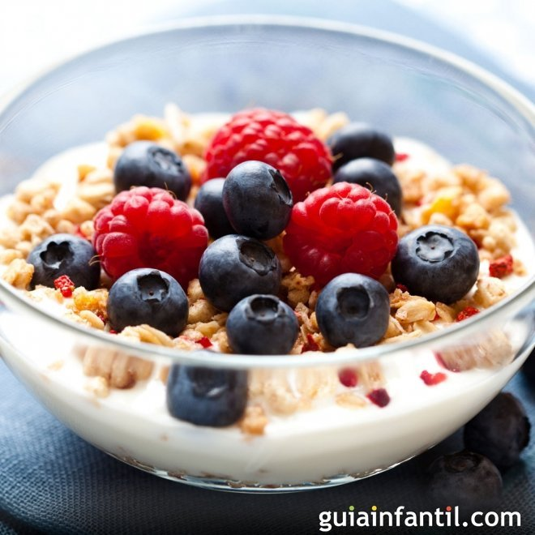

yogur de frutas

Indice
- Primer paso
- Segundo paso
- Tercer paso
- Ultimo paso
Ingredientes
- 30 gr de cereales
- 125 gr de yogur natural
- 100 gr de arándanos o grosellas
- 50 gr de chocolate negro
- 25 gr de almendras tostadas
Receta
- Vaciar los yogures en un bol, batir un poco para que estén cremosos. Si no son yogures azucarados se puede añadir una cucharadita de azúcar o de miel.
- Lavar bien los arándanos. Podemos dejarlos enteros o partirlos por la mitad, dependiendo del tamaño y lo que prefiramos. Echarlas con el yogur.
- Trocear las almendras y rallar el chocolate para hacer virutas (también podemos hacerlo trocitos o usar chips de chocolate). Añadir al bol.
- Incorporar los cereales y mezclar todo bien. Servir fresquito con una hoja de menta por encima.
Volver al menu